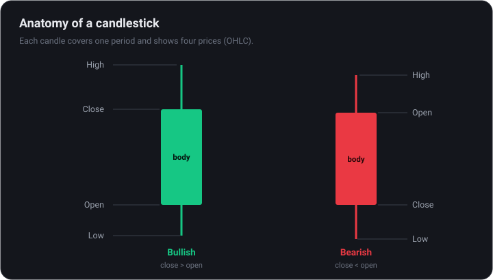
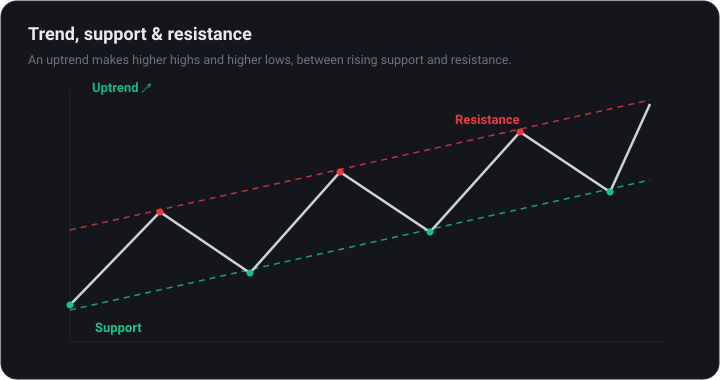
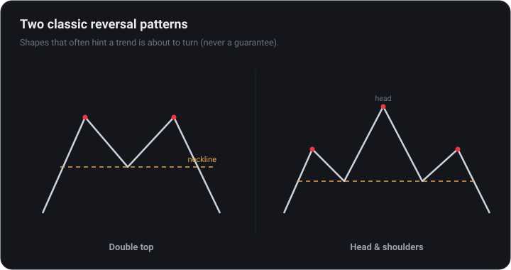

Chart Reading: Technical Analysis Basics
Learn to read price charts from scratch — candlesticks, trends, support and resistance, the handful of indicators that actually matter, and a simple risk-managed workflow.
Why read charts at all?
Technical analysis (TA) is the study of price and volume to gauge probability — not certainty. The idea: a chart reflects everything participants currently believe, and price tends to move in trends and repeat patterns driven by human behavior.
TA pairs with fundamental analysis (FA) — what something is worth. FA suggests what to consider owning; TA helps with when and where to manage risk. Neither predicts the future; both manage odds.
TA is a tool for managing risk and timing, not a crystal ball. Anyone promising guaranteed signals is selling something.
Chart types: line, bar & candlestick
Before decoding signals, know the three common ways price is drawn. Each shows the same data with more or less detail, and picking the right one keeps you from being overwhelmed.
- Line chart — connects the closing price of each period into a single line. It strips away noise and is the cleanest way to see the overall trend at a glance.
- Bar chart (OHLC) — each bar marks the open, high, low and close. More detail than a line, and popular with longer-term traders.
- Candlestick chart — the same OHLC data drawn as a body and wicks, colour-coded up or down. The most popular format because patterns stand out visually.
There are more exotic types — Heikin-Ashi, Renko, point-and-figure — that smooth or re-shape price to highlight trends. They are useful later, but a beginner needs only candlesticks and the occasional line chart for context.
Start on a line chart to read the trend, then switch to candlesticks for the detail. Two views of one chart beat squinting at a single busy view.
Reading candlesticks
Most traders use candlestick charts. Each candle covers one time period and shows four prices: open, high, low, and close (OHLC).

- The body spans open to close. Green/hollow means it closed up; red/filled means it closed down.
- The wicks (shadows) mark the high and low — they show rejection and where price was forced back.
- The timeframe matters: a 5-minute candle and a weekly candle tell different stories. Beginners do best on the daily.
Long wicks, big bodies, and clusters of candles form the patterns you will learn to recognize. The best way to learn is to pull up a live chart and watch them print.
Candlestick signals that matter
Individual candles whisper; clusters of them speak. A handful of shapes show up again and again, and they matter most when they appear at a level you already care about — support, resistance or a trendline.
- Doji — open and close almost equal, a small body with wicks. Indecision, and a possible turning point after a strong run.
- Hammer / shooting star — a small body with one long wick. A long lower wick at support hints buyers stepped in; a long upper wick at resistance hints sellers did.
- Engulfing — a candle whose body fully swallows the previous one. Bullish engulfing at support, or bearish at resistance, signals momentum shifting.
Context is everything. The same hammer is meaningful at major support and meaningless in the middle of a choppy range. Read the location first, the candle second.
No single candle is a trade by itself. Patterns raise or lower the odds — they do not predict. Wait for confirmation from the next candle or from volume.
Trend, support & resistance
The first question on any chart: what is the trend? An uptrend makes higher highs and higher lows; a downtrend makes lower highs and lower lows; sideways is a range. 'The trend is your friend' because trading with it puts odds on your side.
- Support — a price floor where buyers have repeatedly stepped in.
- Resistance — a ceiling where sellers have repeatedly appeared.
- Trendlines — connect the higher lows (or lower highs) to visualize the trend’s slope.
Old resistance often becomes new support once broken, and vice versa. These levels are where the market makes decisions — and where you will plan entries and exits.

Timeframes & the multi-timeframe approach
Every chart has a timeframe — the period each candle represents, from one minute to one month. The same asset can look like a strong uptrend on the weekly and a sharp sell-off on the 15-minute. Neither is wrong; they answer different questions.
- Higher timeframes set the context — the daily and weekly show the dominant trend and the levels that really matter.
- Lower timeframes refine the entry — once you know the direction, drop down to find a cleaner price to act on.
- They should agree — a trade with the daily trend and a lower-timeframe trigger has the odds on its side; when they conflict, the honest answer is usually to wait.
Beginners do best anchoring to one higher timeframe — the daily is forgiving — and resisting the urge to react to every wiggle on the one-minute chart. More zoom is not more signal; it is usually more noise.
Trade in the direction of the higher-timeframe trend and use the lower timeframe only for timing. Fighting the bigger trend is the most expensive habit in technical analysis.
Volume and a few key indicators
Volume is the conviction behind a move: a breakout on high volume is far more credible than one on low volume. Beyond volume, a small, well-understood toolkit beats a screen full of indicators:
- Moving averages (MA/EMA) — smooth price to show the trend; the 50- and 200-day are widely watched.
- RSI — a 0–100 momentum gauge; extremes hint at overbought or oversold, but can stay extreme in strong trends.
- MACD — tracks momentum shifts via the relationship between two moving averages.
More indicators does not mean more accuracy. Stacking ten of them usually just produces confident-looking noise. Master a few.
Patterns and putting it together
Recurring patterns hint at what may come next: continuation patterns (flags, triangles) suggest the trend resumes; reversal patterns (double tops/bottoms, head-and-shoulders) suggest it turns. None are guarantees — they are setups with a historical edge.

Read the chart top-down: trend first, then key support and resistance, then confirm with volume and one momentum indicator. If they agree, you have a thesis. If they conflict, the best trade is often no trade.
Beware confirmation bias — it is easy to 'see' a pattern that justifies what you already want to do. Mark your levels before you take a position.
Order types: turning analysis into a trade
Reading a chart is only half the job; you still have to execute. A few order types cover almost everything a beginner needs, and using the right one protects both your entry price and your downside.
- Market order — fills immediately at the best available price. Simple, but you pay the spread and any slippage.
- Limit order — fills only at your chosen price or better. More patience, less cost, and it lets you set entries in advance.
- Stop-loss — triggers once price hits a level, used to cap a loss when you are wrong.
- Stop-limit — a stop that then places a limit order, giving you price control at the risk it does not fill in a fast move.
- Take-profit — a limit order parked at your target so a win is banked even while you are away from the screen.
Place your stop where the idea is wrong — beyond the support level or pattern you traded — not at a round number you happen to find comfortable. The market does not know or care about your comfort.
Set your stop and target at the same moment you enter. Deciding them after you are in a position is how small losses quietly become large ones.
Position sizing & risk-reward
Survival in markets is a maths problem before it is a charting one. Position sizing decides how much you can lose on any single trade, and it is the closest thing to a free lunch that trading offers.
- Risk a fixed, small percentage — many traders cap the loss on any one trade near 1% of the account, so a losing streak barely dents the balance.
- Size from the stop — your position size follows from the distance to your stop-loss, not from how confident you feel.
- Think in R — express every trade as a multiple of the amount risked (1R). A setup that risks 1R to make 3R only needs to work a third of the time to break even.
This is why win rate alone is meaningless. A trader right 40% of the time with 3R winners makes money; a trader right 70% of the time with tiny wins and the odd huge loss goes broke. Expectancy — average reward weighed against average risk — is what counts.
Protect the downside and the upside takes care of itself. You control your risk per trade and your position size; you do not control whether any single trade wins.
Trading psychology & the mistakes that cost most
Most blown accounts are not destroyed by bad analysis but by predictable human behaviour. Knowing the traps in advance is the first defence.
- FOMO — chasing a candle that has already moved, buying the top out of fear of missing out.
- Revenge trading — trying to win back a loss immediately with a bigger, sloppier bet.
- Moving the stop — widening a stop-loss to avoid being wrong, turning a planned small loss into a large one.
- Overtrading — confusing activity with progress and bleeding out on fees and marginal setups.
- Confirmation bias — seeing only the evidence that supports the trade you already want to make.
The antidote is process, not willpower: mark your levels before you enter, size every trade the same disciplined way, and keep a journal you review weekly. Improvement comes from the review, not the trade.
Educational content, not financial advice. Practise on a paper-trading account until your process is boring and repeatable before risking real money.
Backtesting & journaling: proving an edge
A setup is only worth trading if it wins more than it loses over many tries. Two cheap habits separate traders who improve from those who just churn: testing an idea before risking money, and recording every trade afterwards.
Backtesting
Backtesting means checking how a rule would have performed on past data. Scroll back on a chart, apply your rule honestly bar by bar, and tally the results. It will not predict the future, but it quickly kills ideas that never worked and builds conviction in the ones that did.
- Define the rule precisely — entry, stop and target with no room for second-guessing after the fact.
- Test a meaningful sample — dozens of trades across different market conditions, not three cherry-picked winners.
- Avoid hindsight bias — do not let knowledge of what happened next leak into the decision.
Journaling
A trade journal turns experience into improvement. Record the setup, a screenshot, your reason for entering, the outcome, and how you felt. Patterns emerge fast — usually that a handful of impulsive trades cause most of the damage.
You cannot improve what you do not measure. The weekly review of your journal teaches more than any indicator ever will.
A simple, risk-managed workflow
Edge means nothing without risk management. A beginner-friendly routine:
- Pick one timeframe and stick to it while learning (daily is forgiving).
- Identify the trend and mark support/resistance.
- Define your entry, stop-loss, and target before entering — know your exit if you are wrong.
- Size the position so a stop-out costs a small, fixed percentage of your account.
- Journal every trade and review weekly. Improvement comes from the review, not the trade.
Save a clean chart layout you trust and reuse it, so every analysis starts from the same disciplined view.
Educational content, not financial advice. Practice on paper before risking real capital.